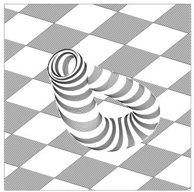

<html>
  <head>
    <meta name="viewport" content="width=device-width, user-scalable=no, minimum-scale=1.0, maximum-scale=1.0">
    <!-- <meta name="viewport" content="width=device-width, initial-scale=1" /> -->
    <script src="https://cdn.jsdelivr.net/gh/hiukim/mind-ar-js@1.1.5/dist/mindar-image.prod.js"></script>
    <script src="https://aframe.io/releases/1.2.0/aframe.min.js"></script>
    <script src="https://cdn.jsdelivr.net/gh/hiukim/mind-ar-js@1.1.5/dist/mindar-image-aframe.prod.js"></script>
<script>
      AFRAME.registerComponent("play-on-click", {
        init: function () {
          this.onClick = this.onClick.bind(this);
        },
        play: function () {
          window.addEventListener("click", this.onClick);
        },
        pause: function () {
          window.removeEventListener("click", this.onClick);
        },
        onClick: function (evt) {
          var videoEl = this.el.getAttribute("material").src;
          if (!videoEl) {
            return;
          }
          this.el.object3D.visible = true;
          videoEl.play();
        },
      });
</script>
  </head>
  <body>
    <a-scene mindar-image="imageTargetSrc: assets/targets.mind;" color-space="sRGB" renderer="colorManagement: true, physicallyCorrectLights" vr-mode-ui="enabled: false" device-orientation-permission-ui="enabled: false">
      <a-assets>
	<!-- <video id="vid" preload="auto" src="https://cdn.aframe.io/videos/bunny.mp4" width="160" height="90" autoplay="" loop="true" crossorigin="anonymous" muted="" playsinline="" webkit-playsinline=""></video> -->
	<video src="assets/video.mp4"
               preload="auto" id="vid" loop="true" crossorigin="anonymous" autoplay muted playsinline webkit-playsinline>
        </video>
	<!-- <video id="videoBunny" preload="auto" src="https://cdn.aframe.io/videos/bunny.mp4" width="160" height="90" autoplay loop="true" crossOrigin="anonymous" muted></video> -->
	<!-- <video src="assets/video.mp4" -->
        <!--        preload="auto" id="vid" response-type="arraybuffer" loop -->
        <!--        crossorigin webkit-playsinline autoplay muted playsinline> -->
        <!-- </video> -->

	<!--  -->
	<!-- <a-asset-item id="avatarModel" src="https://cdn.jsdelivr.net/gh/hiukim/mind-ar-js@1.1.5/examples/image-tracking/assets/card-example/softmind/scene.gltf"></a-asset-item> -->
      </a-assets>

      <a-camera position="0 0 0" look-controls="enabled: false"></a-camera>

      <a-entity mindar-image-target="targetIndex: 0" material="shader: flat; src: #vid" geometry="primitive: plane; width: 1; height: 1;" position="0 0 0" rotation="0 0 0" play-on-click visible="false">

      <!-- <a-entity mindar-image-target="targetIndex: 0"> -->
      <!-- 	<a-entity material="shader: flat; src: #vid" geometry="primitive: plane; width: 1; height: 1;" position="0 0 0" rotation="0 0 0" play-on-click visible="true"> -->
      <!-- 	</a-entity> -->
	<!-- <a-plane src="#vid" position="0 0 0" height="1" width="1" rotation="0 0 0"></a-plane> -->

        <!-- <a-entity material="shader: flat; src: #vid" geometry="primitive: plane; width: 1; height: 1" position="0 0 0" rotation="0 0 0" play-on-click visible="true"> </a-entity> -->
	  <!-- <a-video -->
<!--                 src="#vid" -->
<!--                 position='0 0 0' -->
<!--                 rotation='0 0 0' -->
<!--                 width='1' -->
<!--                 height='1' -->
<!--                 > -->
<!-- </a-video> -->
<!-- <a-plane src="#card" position="0 0 0" height="1" width="1" rotation="0 0 0"></a-plane> -->
        <!-- <a-gltf-model rotation="0 0 0 " position="0 0 0.1" scale="0.005 0.005 0.005" src="#avatarModel" -->
        <!--   animation="property: position; to: 0 0.1 0.1; dur: 1000; easing: easeInOutQuad; loop: true; dir: alternate" -->
        <!-- > -->
      <!-- </a-entity> -->
    </a-scene>
<script>
      window.addEventListener('click', function () {
      var v = document.querySelector('#vid');
      v.play();
      });
</script>
  </body>
</html>
